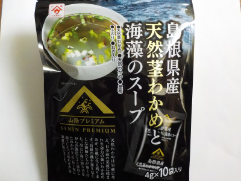

魚の屋の島根県産天然茎わかめと海藻のスープ。
2022/10/10

茎わかめとワカメが島根県産で、昆布、ふのり、ネギが国産です。
細かい具材と粉末のダシのスープでした。具は細かいので食感を楽しく感じはしませんでした。茎ワカメや昆布の風味がよく出ていて、メカブっぽい味がしました。
海藻を補給した気分になりました。
島根県大田市静間町213番地11
2022/10/10

茎わかめとワカメが島根県産で、昆布、ふのり、ネギが国産です。
細かい具材と粉末のダシのスープでした。具は細かいので食感を楽しく感じはしませんでした。茎ワカメや昆布の風味がよく出ていて、メカブっぽい味がしました。
海藻を補給した気分になりました。